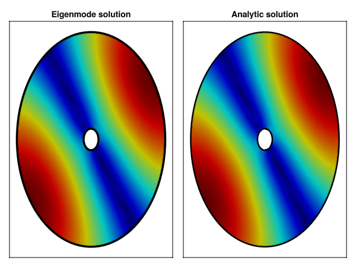

Coaxial Waveguide
Coaxial waveguides are unique in supporting a TEM mode, which has no cutoff frequency. This makes coaxial transmission lines suitable for broadband applications. Additionally, coaxial structures support TE and TM higher-order modes, whose field solutions involve both Bessel functions of the first kind (Jₘ) and second kind (Yₘ) to satisfy boundary conditions on both the inner and outer conductors.
For visualization purposes, we focus on the higher-order TE and TM modes, as the TEM mode has a simple radial field pattern.
Numerical / Analytical Comparison
To validate the analytical solutions, we compare numerical eigenmode results obtained with finite element method against the closed-form expressions. The mesh for the coaxial cross-section includes both the inner conductor boundary (at radius R2) and the outer conductor boundary (at radius R1).
Mesh files (.msh) can be found in \src\Assets\mesh and are generated with Gmsh.jl using functions in \src\Assets\example_mesh.jl.
using GLMakie
name = "../Assets/mesh/coax_wg1.msh"
R1 = 1
R2 = 0.1
#coaxwg_mesh(R1, R2; dl = 0.1, name = name)
model = GmshDiscreteModel(name, renumber = false)
A_te, B_te, U_te, V_te = engeimode_gridap(model, :TE, order = 2)
A_tm, B_tm, U_tm, V_tm = engeimode_gridap(model, :TM, order = 2)
nev = 6
λ_te, ϕ_te = eigs(A_te, B_te; nev=nev, which=:SM, maxiter=6200)
λ_tm, ϕ_tm = eigs(A_tm, B_tm; nev=nev, which=:SM, maxiter=6200)
Ω_domain = Triangulation(model, tags="Domain")
gridap_coords = get_node_coordinates(Ω_domain)
makie_coords = map(x->Point2(x.data), gridap_coords)
face_to_nodes = stack(map(x->x, get_cell_node_ids(Ω_domain)))'
mn = 3
uh = FEFunction(V_te, real.(ϕ_te[:, mn]), get_dirichlet_dof_values(V_te))
gridap_values = evaluate(uh, gridap_coords)
fz_num = abs.(gridap_values)
fz_num = fz_num / maximum(fz_num)
coord2 = makie_coords[argmin(fz_num)]
# Analytic solution
uh_t = CellField(x-> begin
x, y = x[1], x[2]
r = hypot(x, y)
θ = atan(y, x) - (atan(coord2[2], coord2[1])) + pi/2
(Er, Eθ, Ez, Hr, Hθ, Hz) = te_coax_fields(r, θ, R1, R2, 1, 1, 10e9, 1.0, 1.0)
return Hz end, Ω_domain)
fz_an = evaluate(uh_t, gridap_coords)
fz_norm = abs.(fz_an) / maximum(abs.(fz_an))
fig = Figure()
ax1 = Axis(fig[1,1], title = "Eigenmode solution")
hidedecorations!(ax1)
t = range(0, 2*pi, length=100)
circ_x_r1 = @. R1 * cos(t)
circ_y_r1 = @. R1 * sin(t)
t1 = lines!(ax1, circ_x_r1, circ_y_r1, linewidth = 3.5, color = :black)
circ_x_r2 = @. R2 * cos(t)
circ_y_r2 = @. R2 * sin(t)
t2 = lines!(ax1, circ_x_r2, circ_y_r2, linewidth = 3.5, color = :black)
translate!(t1, (0, 0, 2))
translate!(t2, (0, 0, 2))
mesh!(ax1, makie_coords, face_to_nodes, color = fz_num, colormap = :jet)
ax2 = Axis(fig[1,2], title = "Analytic solution")
hidedecorations!(ax2)
t1 = lines!(ax2, circ_x_r1, circ_y_r1, linewidth = 2.5, color = :black)
t2 = lines!(ax2, circ_x_r2, circ_y_r2, linewidth = 2.5, color = :black)
translate!(t1, (0, 0, 2))
translate!(t2, (0, 0, 2))
mesh!(ax2, makie_coords, face_to_nodes, color = abs.(fz_an), colormap = :jet)
fig
The comparison shows excellent agreement between the numerical eigenmode solution and the analytical result. Note that the numerical solution may have an arbitrary phase rotation, which is corrected in the visualization by aligning the field minimum.
The normalized error between the numerical approximation and the analytical solution is:
n_num = sqrt(sum(abs2, fz_num))
n_an = sqrt(sum(abs2, fz_an))
fz_num_norm = abs.(fz_num)/n_num
fz_an_norm = abs.(fz_an)/n_an
rmse = err = sqrt(sum(abs2, fz_num_norm-fz_an_norm)/length(fz_an_norm)) #0.0002707251478033022This small RMSE (root mean square error) of approximately 0.00027 confirms the accuracy of the analytical solution.
Analytical Results
We now visualize the first 24 TE modes computed analytically using te_coax_fields. The modes are ordered by increasing cutoff frequency. For a coaxial guide with outer radius R1 = 1 and inner radius R2 = 0.1 (ratio 10:1), the mode patterns show the characteristic interference between fields reflected from the inner and outer conductors.
using GLMakie
name = "../Assets/mesh/coax_wg2.msh"
R1 = 1
R2 = 0.1
#coaxwg_mesh(R1, R2; dl = 0.02, name = name)
coord, conn = mesh_data(name)
coords = coord[:, 1:maximum(conn)]
xcoords = coords[1, :]
ycoords = coords[2, :]
rcoords = map((x, y) -> hypot(x, y), xcoords, ycoords)
θcoords = map((x, y) -> atan(y, x), xcoords, ycoords)
modekind = [(1, 1) ,(2, 1) ,(0, 1) ,(3, 1),(1, 2),
(4, 1) ,(5, 1) ,(2, 2) ,(0, 2) ,(6, 1),
(3, 2) ,(1, 3) ,(7, 1) ,(4, 2) ,(8, 1),
(2, 3) ,(5, 2) ,(9, 1) ,(0, 3) ,(3, 3),
(1, 4) ,(6, 2) ,(10, 1) ,(4, 3)]
plot_ids = Iterators.product(1:6, 1:4) |> collect |> vec
t = range(0, 2*pi, length=100)
circ_x_r1 = @. R1 * cos(t)
circ_y_r1 = @. R1 * sin(t)
circ_x_r2 = @. R2 * cos(t)
circ_y_r2 = @. R2 * sin(t)
fig = Figure(size = (1200, 900))
for (idplot, (m, n)) in enumerate(modekind)
stitle = L"TE_{%$m,%$n}"
ii, jj = plot_ids[idplot]
axi = Axis(fig[jj,ii], title = stitle, titlesize = 20)
hidedecorations!(axi)
fields = te_coax_fields(rcoords, θcoords, R1, R2, m, n, 10e9, 1.0, 1.0)
fz = getindex.(fields, 6)
t1 = lines!(axi, circ_x_r1, circ_y_r1, linewidth = 3.5, color = :black)
t2 = lines!(axi, circ_x_r2, circ_y_r2, linewidth = 3.5, color = :black)
translate!(t1, (0, 0, 2))
translate!(t2, (0, 0, 2))
mesh!(axi, coords, conn, color = abs.(fz), colormap = :jet)
end
fig
The TE mode patterns display the magnitude of the longitudinal magnetic field Hz. Modes with m > 0 exhibit azimuthal variations, while modes with larger n exhibit additional radial nodal circles.
The TM modes for the same geometry different ordering and patterns:
modekind = [(0, 1) ,(1, 1) ,(2, 1) ,(3, 1) ,(0, 2),
(1, 2) ,(4, 1) ,(2, 2) ,(5, 1) ,(3, 2),
(6, 1) ,(0, 3) ,(1, 3) ,(4, 2) ,(7, 1),
(2, 3) ,(8, 1) ,(5, 2) ,(3, 3) ,(9, 1),
(6, 2) ,(0, 4) ,(1, 4) ,(4, 3)]
plot_ids = Iterators.product(1:6, 1:4) |> collect |> vec
fig = Figure(size = (1200, 900))
for (idplot, (m, n)) in enumerate(modekind)
stitle = L"TM_{%$m,%$n}"
ii, jj = plot_ids[idplot]
axi = Axis(fig[jj,ii], title = stitle, titlesize = 20)
hidedecorations!(axi)
fields = tm_coax_fields(rcoords, θcoords, R1, R2, m, n, 10e9, 1.0, 1.0)
fz = getindex.(fields, 3)
t1 = lines!(axi, circ_x_r1, circ_y_r1, linewidth = 3.5, color = :black)
t2 = lines!(axi, circ_x_r2, circ_y_r2, linewidth = 3.5, color = :black)
translate!(t1, (0, 0, 2))
translate!(t2, (0, 0, 2))
mesh!(axi, coords, conn, color = abs.(fz), colormap = :jet)
end
figTM modes satisfy the boundary condition that Ez = 0 at both conductor surfaces. The field patterns are determined by combinations of Bessel functions chosen to satisfy these dual boundary conditions.
Additional Examples
To demonstrate how geometry affects mode patterns, we now examine a coaxial guide with a larger inner conductor. The following visualization shows the first 24 higher-order modes (excluding the TEM mode) for a radius ratio R1/R2 = 1/0.65, corresponding to a much thinner annular region.
R1 = 1
R2 = 0.65
name = "../Assets/mesh/coax_wg3.msh"
#coaxwg_mesh(R1, R2; dl = 0.01, name = name)
coord, conn = mesh_data(name)
coords = coord[:, 1:maximum(conn)]
xcoords = coords[1, :]
ycoords = coords[2, :]
rcoords = map((x, y) -> hypot(x, y), xcoords, ycoords)
θcoords = map((x, y) -> atan(y, x), xcoords, ycoords)
modekind = [(1, 1, :TE) , (2, 1, :TE) , (3, 1, :TE), (4, 1, :TE),
(5, 1, :TE) , (6, 1, :TE), (7, 1, :TE), (0, 1, :TM),
(0, 1, :TE) , (1, 1, :TM) , (1, 2, :TE) , (2, 1, :TM),
(2, 2, :TE) , (8, 1, :TE) , (3, 1, :TM) , (3, 2, :TE),
(4, 1, :TM) , (4, 2, :TE) , (9, 1, :TE), (5, 1, :TM),
(5, 2, :TE) , (6, 1, :TM) , (10, 1, :TE) , (6, 2, :TE)]
t = range(0, 2*pi, length=100)
circ_x_r1 = @. R1 * cos(t)
circ_y_r1 = @. R1 * sin(t)
circ_x_r2 = @. R2 * cos(t)
circ_y_r2 = @. R2 * sin(t)
fig = Figure(size = (1200, 900))
for (idplot, (m, n, ki)) in enumerate(modekind)
ii, jj = plot_ids[idplot]
stitle = L"%$(ki)_{%$m,%$n}"
axi = Axis(fig[jj,ii], title = stitle, titlesize = 20)
hidedecorations!(axi)
if ki == :TE
fields = te_coax_fields(rcoords, θcoords, R1, R2, m, n, 10e9, 1.0, 1.0)
fz = getindex.(fields, 6)
else
fields = tm_coax_fields(rcoords, θcoords, R1, R2, m, n, 10e9, 1.0, 1.0)
fz = getindex.(fields, 3)
end
t1 = lines!(axi, circ_x_r1, circ_y_r1, linewidth = 3.5, color = :black)
t2 = lines!(axi, circ_x_r2, circ_y_r2, linewidth = 3.5, color = :black)
translate!(t1, (0, 0, 2))
translate!(t2, (0, 0, 2))
mesh!(axi, coords, conn, color = abs.(fz), colormap = :jet)
end
fig